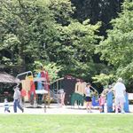

The City of Kenmore is dedicated to promoting healthy living and providing opportunities for children and adults to stay healthy. In 2014, Kenmore was named a "Playful City USA" community by national nonprofit KaBoom! The City is one of only 213 communities across the U.S. to earn this designation. Information about all City, County, and State parks & trails in Kenmore can be found here. We hope you will be able to get all the information you need to pick the park that is just right for your plans.
City Parks
 Linwood Park
Linwood Park5601 NE 193rd Street
Kenmore, WA 98028
 This small neighborhood park, approximately 1.4 acres, is located in the northwestern portion of the city. The park has a playground, open lawn area for active play, and picnic tables.
Moorland Park
This small neighborhood park, approximately 1.4 acres, is located in the northwestern portion of the city. The park has a playground, open lawn area for active play, and picnic tables.
Moorland Park15221 84th Ave NE
Kenmore, WA 98028
Moorlands Park offers visitors over three acres of manicured open lawn and an athletic field. This park, tucked away in a neighborhood and located next to Moorlands Elementary, is ideal for a quick dog walk or informal softball game. Other features include picnic tables, children's play area and a basketball court. Field available for reservation through the Northshore School District. The park is maintained by the Northshore School District.
Northshore Summit Park6200 NE 193rd Street
Kenmore, WA 98028
This 3.6 acre neighborhood park contains walking trails, open lawn areas for informal play, two children's play areas, picnic tables, picnic benches, sitting boulders, general landscaping and wetlands and wooded areas. This park was dedicated on May 17, 2014.
Rhododendron Park6910 NE 170th Street
Kenmore, WA 98028
Centrally located within the heart of Kenmore, this park features one of the largest public collections of hybrid rhododendrons in the Northwest. In addition to beautiful rhododendrons, the 13-acre park features two play areas, basketball court, picnic shelter, pedestrian access trails and walkways, large green space, and restroom facilities. The picnic shelter is available for rentals through the Kenmore Senior Center by calling 425-489-0707.
Squire's Landing7353 NE 175th Street
Kenmore, WA 98028
Squire's Landing Park connects the community to the water. The property serves a variety of park functions, including a wildlife viewpoint, launching point for hand-powered watercraft, and open space for picnicking. The park includes a floating dock and waterfront activities center operated by the Kenmore Canoe and Kayak Club. Squire's Landing name is intended to honor Watson Squire, an early Kenmore developer who had visions for a local waterfront park in the early 1900s.
Tracy Owen Station at Log Boom Park17415 61st Ave NE
Kenmore, WA 98028
This 5.5-acre park provides access to over 1200 lineal feet of shoreline on Kenmore's Lake Washington waterfront. The public dock is a fantastic place to watch the sea planes land, toss out a line for fishing or simply enjoy the sunset. Other features include the Kenmore History Path, playground area, picnic tables, access to the Burke-Gilman Trail, daytime moorage, and restroom facility. The park was renamed Tracy Owen Station after the late King County Councilmember, Tracy Owen.
Wallace Swamp Creek Park19851 73rd Ave NE
Kenmore, WA 98028
A passive open space of approximately 25-acres located adjacent to the west and north side of Kenmore Elementary School. This open space extends east and west across Swamp Creek between 68th Ave. NE & 73rd Ave. NE. The open space is minimally developed. A bridge crosses Swamp Creek allowing for salmon spawning views, access to stream and walking or riding trails.
Additional Parks, Recreation & Trails
Bastyr University14500 Juanita Drive NE
Kenmore, WA 98028
Athletic Fields
Bastyr University and the City have an agreement through 2020 to allow public use and community scheduling of the private athletic fields including two ball fields and one soccer field. Reserve fields through Bastyr.
Bastyr University and the City have an agreement through 2020 to allow public use and community scheduling of the private athletic fields including two ball fields and one soccer field. Reserve fields through Bastyr.
Medicinal Herb Garden Tours
The Medicinal Herb Garden is always open for a self-guided tour, where you are welcome to view over 350 western and Chinese herbs. Feel free to visit, browse and explore on your own any time. Guided tours are available by appointment.
The Medicinal Herb Garden is always open for a self-guided tour, where you are welcome to view over 350 western and Chinese herbs. Feel free to visit, browse and explore on your own any time. Guided tours are available by appointment.
Reflexology Foot Path
The reflexology foot path is the first public reflexology path in North America. Based on wisdom from ancient Egypt, India and China, walking barefoot on a reflexology path massages and stimulates acupressure points in the soles of the feet connected to various energy meridians of the body. The pressure of stones under the feet combines with gravity to provide a therapeutic exercise that stimulates health. Bastyr's 65-foot path features smooth native Northwest river rock artistically embedded in cement. A handrail provides stability and improves accessibility.
Photos courtesy of Bastyr University and Northwest Soccer Camp
The reflexology foot path is the first public reflexology path in North America. Based on wisdom from ancient Egypt, India and China, walking barefoot on a reflexology path massages and stimulates acupressure points in the soles of the feet connected to various energy meridians of the body. The pressure of stones under the feet combines with gravity to provide a therapeutic exercise that stimulates health. Bastyr's 65-foot path features smooth native Northwest river rock artistically embedded in cement. A handrail provides stability and improves accessibility.
Photos courtesy of Bastyr University and Northwest Soccer Camp
Burke-Gilman TrailAccess Points: Gasworks Park, Matthews Beach Park, Log Boom Park
The King County Burke-Gilman Trail (BGT) is an 18-mile paved, off-road facility over its entire length with the exception of an on-road segment in Ballard. The trail crosses Ballard, Fremont, Wallingford, the University District and View Ridge within the City of Seattle, as well as the cities of Lake Forest Park, Kenmore and Bothell. King County's best-known regional trail, the BGT is highly popular with cyclists, joggers, skaters and strollers, and weekday bicycle commuters between Seattle and the Eastside.
Great Blue Heron Viewing AreaNorthshore Park & Ride, Bothell Way & 73rd Ave NE
Kenmore, WA 98028
The Great Blue Heron is the largest heron in North America. It is a large bird, with a slate-gray body, chestnut and black accents, and very long legs and neck. In flight, it looks enormous, with a six-foot wingspan. Heron nesting season is mid-February to late July. Bring your binoculars to see the birds up close.
Kenmore Senior Center6910 NE 170th Street
Kenmore, WA 98028
The Kenmore Senior Center, located at Rhododendron Park, is a branch of the Northshore Senior Center. The Kenmore Senior Center along with the Northshore Senior Center offers health clinics, classes, clubs, a computer lab, special events, Wellness Project, Adult Day Centers, social services and trips galore. A listing of regularly scheduled activities, classes, and services of the Kenmore Senior Center, special events, trips, support groups and general announcements are available for free. Pick up your copy of the quarterly newsletter at the reception desk of the senior center. The picnic shelter at Rhododendron Park is available for rentals through the Kenmore Senior Center by calling 425-489-0707.
Saint Edward State Park14445 Juanita Drive NE
Kenmore, WA 98028
 The Saint Edward State Park is a 316-acre day-use park with 3,000 feet of freshwater shoreline on Lake Washington. Once a Catholic seminary, the park's rich history reflects in its grounds and architecture. Walks along the undeveloped lakeshore are peaceful and give the visitor many opportunities for nature study. The park features a playground area for children of all ages. Other activities include hiking, biking, bird watching, soccer and baseball fields.
The Saint Edward State Park is a 316-acre day-use park with 3,000 feet of freshwater shoreline on Lake Washington. Once a Catholic seminary, the park's rich history reflects in its grounds and architecture. Walks along the undeveloped lakeshore are peaceful and give the visitor many opportunities for nature study. The park features a playground area for children of all ages. Other activities include hiking, biking, bird watching, soccer and baseball fields.